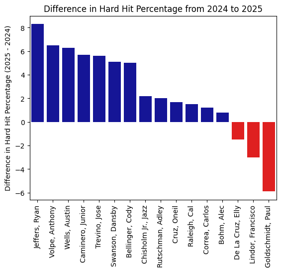
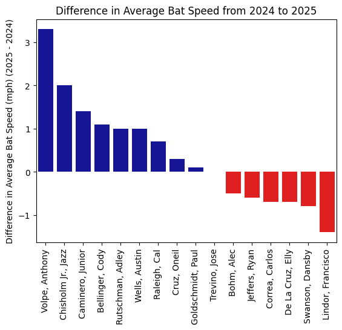
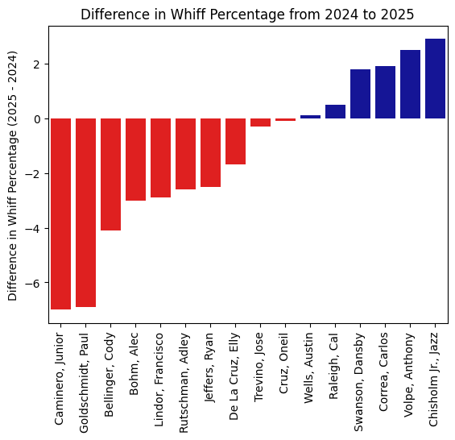

Bringing the Boom: Analyzing the Long-Term Effects of Torpedo Bat Usage
By Orlando Pereira | January 09, 2026
Introduction
At the beginning of the 2025 MLB season, the New York Yankees scored thirty-six runs and hit fifteen home runs in three games against the Milwaukee Brewers, tying both the MLB record for most home runs in a team’s first three games, as well as the franchise record for most home runs hit in a game, with nine of their homers coming in the second game of the series. However, the Yankees’ performance itself wasn’t what caught people’s attention. During the first game’s broadcast, it was noted that several players on the Yankees were using so-called “torpedo bats”, which bulges out around the sweet-spot of the bat and then tapers thinner toward the end of the bat, as opposed to the more traditional more-cylindrical bat where the barrel gets marginally larger as you move towards the end of the bat. The offensive explosion in the following games led to a heavy discussion within the baseball community about the effect that these bats would have over the course of the season, and whether or not they would/should be permitted in the long run.
Background Science
In April 2025, Professor Alan M. Nathan of the University of Illinois published an article on Fangraphs going over the theoretical advantages of a torpedo bat using a computer model to estimate batted-ball outcomes at different points of the bat. The article, as well as a later presentation at the 2025 Saberseminar, compare the exit velocity output of a standard bat and a torpedo bat model used by an anonymous MLB player. Professor Nathan’s model shows that while the torpedo bat loses exit velocity output near the end of the bat, it peaks about 1 mph higher than the standard bat, and is able to produce a higher exit velocity on the rest of the bat closer to the hands. According to Professor Nathan, this means the torpedo bat’s sweet spot is centered approximately 0.5 inches more inside (for this player’s models at least), and the sweet spot is also wider (in terms of percentage of the bat’s length which produces an exit velocity above 100 mph). When tailored to a specific player, this would potentially help increase their average exit velocity, providing them with a greater area on their bat for more ideal contact. Additionally, Professor Nathan talked about the potential for greater bat speed, given the change in the center of mass for the bat.
In-Season Results
Now that the 2025 season has concluded, we can see exactly how players who used torpedo bats throughout the season performed, and how their performances were potentially altered by their new bats. The following analysis was done using all of the players who were confirmed to be using a torpedo bat throughout the 2025 season, comparing their offensive output to their 2024 numbers. The players were also above a certain plate appearances threshold for both seasons.
Baseball Savant defines a “hard-hit ball” as one hit above 95 mph. We see above that thirteen of the sixteen players analyzed saw some sort of increase between 2024 and 2025, with seven of those players seeing an increase of over four percentage points. This follows a similar trend to Professor Nathan’s model, which predicted that the torpedo bats had a larger area capable of producing 95+ mph contact compared to the standard bats. This larger area translated to players seeing an increase in hard hits.
When it came to bat speed, the differences weren’t as impressive. In this case, only nine players saw some increase in their bat speed, with only four of those seeing an increase over 1 mph. Even with the shifted center of mass, only a select few players seemed to be swinging the bat faster and harder. Even for those who decreased in speed, most of them were also within 1 mph of the previous year. This could, however, be interpreted as another win for the torpedo bat, since it means that players weren’t necessarily swinging harder, and yet still hit the ball harder. For example, Jose Trevino is shown to have ended both seasons with essentially the same bat speed, and yet his hard hit percentage went up by nearly six percentage points. Still, this doesn’t mean the torpedo bat didn’t affect each player’s ability to control their bat.
Most players appear to have seen a decrease in whiff percentage after switching to torpedo bats. Although the changes aren’t as strong as with hard hit percentage, it is still notable that players were able to get to the ball more easily, despite their bat speeds staying relatively similar.
Further Analysis
Despite the mostly positive results for the torpedo bat users, it is still important to note that not all of these aspects line up player-to-player. For example, Paul Goldschmidt had a major decrease in hard hit percentage, but despite having no bat speed change he still managed to also have a big decrease in whiffs. This lines up with his usage by the Yankees to platoon against lefties, where despite losing power to old age, he still hit incredibly well in these matchups. We can also look at Anthony Volpe, who with both a significant increase in hard hit percentage, as well as an over 3 mph higher bat speed, also had an increase in whiffs. Despite seemingly being able to get the bat around faster, and making more quality contact, he still made less overall contact. Perhaps the drastic bat speed climb affected his timing negatively, or feeling better about the quality of his contact led him to swing at worse pitches. This is an important point when discussing the equipment switch. Although it can have some of the intended results, players are not always ready to switch things up, especially a young player like Volpe who is still trying to find his identity in the league. Finally, the most interesting development (to me at least) was finding that Cal Raleigh showed very little change across the three analyzed metrics above, and yet went from thirty-four homers in 2024 to sixty in 2025. Additionally, he only used a torpedo bat as a lefty (he’s a switch hitter). He was always a massive power threat from the right side, but the torpedo bat allowed him to mirror that profile, despite previously being relatively weak as a lefty. Despite this, he neither greatly increased his har hit percentage nor his bat speed, and he actually had a slight increase in whiffs. Perhaps the picture would be clearer isolating his metrics on either side of the plate, but that is a task better suited for its own article.
Conclusion
Although the Yankees had a fun opening series, the full season showed that torpedo bats weren’t game-breakingly successful. However, the evidence is still quite clear: torpedo bat users on average did see noticeable increases in their ability to hit the ball hard. It was, however, not necessarily correlated to how the bat affected their swing (given the low changes in bat speed), but rather seemingly a direct result of having a sweet spot in a better spot, more suited to the hitting patterns of each player. Therein lies the biggest aspect when it comes to choosing to switch to a torpedo bat: it is fully based on where a player tends to hit the ball on the bat. The list in this article only had sixteen players, while there are still several hundred using a traditional bat shape. Even with each player having a specifically modelled torpedo bat to them, not every player in the league would necessarily benefit from switching. But, that also doesn't mean they wouldn’t benefit from a different unorthodox bat shape. As more research is done, and we get better at being able to analyze exactly where and how players hit, bats will likely get more and more customized, within the rules of course. Nevertheless, this is only the beginning, and in a few decades there’s a high chance every player is swinging bats with a barrel fully optimized to them.
Credits
Erick W. Rasco/Getty Images
Baseball Savant (baseballsavant.mlb.com)
Professor Alan M. Nathan of the University of Illinois
Fangraphs (fangraphs.com)